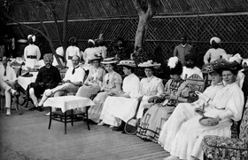

Lezione 17  La corsa alla spartizione del mondo
La corsa alla spartizione del mondo

Passaggio in India di Edward Morgan Forster (1879-1970), bestseller degli anni Venti, è una vivida testimonianza dello scontro di civiltà tra i conquistatori britannici e gli indigeni conquistati, stretti in una silenziosa guerra fredda. La scena si svolge in uno degli esclusivi “circoli” frequentati dai dominatori.
«…la signorina Quested, che diceva sempre quello che aveva in mente, dichiarò di nuovo che desiderava vedere la vera India. Ronny era di ottimo umore. La richiesta gli sembrò comica, ed egli gridò a qualcuno che passava:
“Fielding! Come si fa a vedere la vera India?”
“Cercando di vedere gli indiani” rispose l’altro, e scomparve.
“Chi era quello?”
“Il nostro insegnante, all’Istituto governativo”.
“Come se si potesse evitare di vederli” sospirò la signora Lesley.
“Io ci sono riuscita” disse la signorina Quested. “Eccetto il mio servitore, è troppo se ho parlato a un indiano dal mio sbarco in poi.”
“Beata voi!”
“Ma io voglio vederli”.
Diventò il centro di un divertito gruppo di signore. Una disse: ”Vuole vedere gli indiani! Questa è nuova!”. Un’altra: “Gli indigeni! Dio mio, che idea!”.
Una terza, più seria, disse: “Lasciate che vi spieghi: Non è che gli indigeni vi rispettino di più dopo avervi incontrata, capite?.
“Dopo molti incontri succede la stessa cosa.”
Ma la signora, assolutamente stupida e cordiale, continuò: “Voglio dire questo, prima di sposarmi ero infermiera ne ho visti moltissimi, quindi lo so. Io sugli indiani so la verità vera. Una situazione delle più impossibili per una donna inglese, ero infermiera in uno Stato indigeno: l’unico scampo era di tenersi rigorosamente appartati”.
“Anche dai propri pazienti?”
“Be’, la cosa più amabile che si possa fare per un indigeno è di lasciarlo morire” disse la signora Callendar.
“E se va in paradiso?” domandò la signora Moore, con un sorriso gentile ma pizzicato.
“Può andare dove vuole, purchè non venga vicino a me. Mi danno i brividi”.
“A dire il vero, ho pensato anch’io quello che avete detto sul paradiso, ed è per questo che sono contraria ai missionari” disse la signora che aveva fatto l’infermiera. “Io sono tutta per i cappellani, ma assolutamente contro i missionari. Lasciate che vi spieghi”.
Ma prima che potesse farlo intervenne l’intendente.
“Volete veramente conoscere il fratello Ariano, signorina Quested? Si può combinare facilmente. Non credevo che vi avrebbe divertita.”
Ci pensò un momento.
“Potete vedere praticamente tutti i tipi che vi interessano. Scegliete voi. Io conosco gente dell’amministrazione e proprietari, il nostro Heaslop può metter le mani sulla cricca degli avvocati, mentre se volete specializzarvi nel campo educativo possiamo sempre ricorrere a Fielding.”
“Sono stanca di vedermi sfilare davanti figure pittoresche come su un fregio” spiegò la ragazza. “E’ stato magnifico quando siamo sbarcate, ma quella magia superficiale passa presto.”
L’intendente non provava il minimo interesse per le sue impressioni; non si preoccupava che di farla divertire. Le sarebbe piaciuto fare un ponte? Le spiegò che cosa fosse: una riunione per buttare un ponte sull’abisso tra l’Oriente e l’Occidente; l’espressione era di suo conio e divertiva tutti quelli che la sentivano.
“Io voglio conoscere soltanto quegli indiani che voi incontrate in società… come amici, quelli mi interessano veramente.”
“Be’, noi non li incontriamo in società” disse lui ridendo. “Sono pieni di tutte le virtù, ma noi non li incontriamo, e ormai sono quarantun anni, è troppo tardi per appurarne i motivi”».